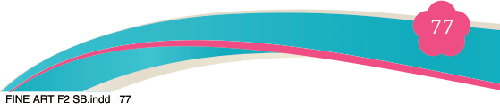
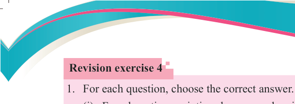
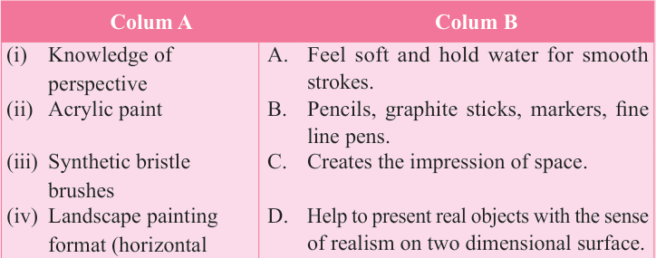

Fine Art for Secondary Schools

77

Student’s Book Form Two

Revision exercise 4
1. For each question, choose the correct answer.
(i) For a long time, paintings have served various purposes in society. Which
of the following best explains the main purpose of simple functional
paintings?
(a) Decorating homes
(b) Covering painting tables
(c) Creating innovative and practical items for global use
(d) Solving the shortage of decorative paintings
(ii) What are the basic characteristics of acrylic colour?
(a) It is soluble in water and once applied becomes permanent.
(b) It is oil based colour and evaporates in air when applied on a surface.
(c) It is not permanent colour and can be cleaned with thinner or turpentine.
(d) It does not keep brushes wet and it never dries.
2. Give a short description on functions of the following tools as used in simple functional painting:
(a) Painting brush
(b) Canvas
(c) Palette
3. Match each item in Column A against its corresponding item from Column B

Colum A
Colum B
(i)
Knowledge of perspective
A.
Feel soft and hold water for smooth
strokes.
(ii) Acrylic paint
B.
Pencils, graphite sticks, markers, fine
line pens.
(iii) Synthetic bristle
brushes C.
Creates the impression of space.
(iv) Landscape painting
format (horizontal
rectangle) D.
Help to present real objects with the sense
of realism on two dimensional surface.
(v) Simple functional
drawing materials
E.
Is a utilitarian type of simple functional
painting.
F.
Is the best methods of removing and
cleaning surfaces and tools.
G
Is a fast-drying medium compared to
other types of colour.
04/08/2025 13:54